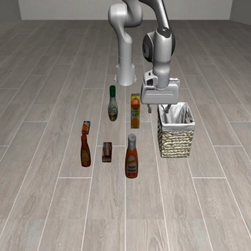
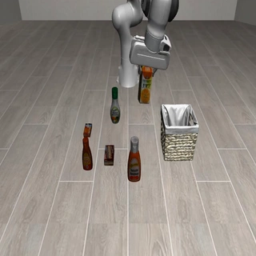
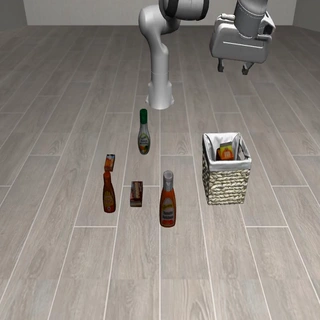

01
Understand the cause
Locate the action, relation, or missing prerequisite that first invalidated progress—not just the unsuccessful outcome.
Physical causal understandingRecover, don’t just continue.
Learning from Feedback for Physical Failure
Understanding and Correction

01 Failed execution
02 Grounded recovery
03 Verified successSelected paper frames · failed and corrected rollouts · Figure 7
Fixed code-backend success
Macro-average over 10 conditionsFrozen π0.5 success
Composite-Unseen · RoboCasa365Valid correction rounds
350 source tasks · 148,415 rolloutsAll execution results are simulation-based. Gains are absolute percentage points (pp); baselines are detailed below.
01 / MOTIVATION
Physical execution is constrained by the embodiment, controller, and environment. How can an embodied brain explain unexpected outcomes and use feedback to plan a recovery its current executor can realize?
Embodied-Corrector connects actions, observable consequences, failure causes, and executable recoveries. Controlled failure–recovery data teaches physical causal understanding. Evaluation-first supervised training and noise-aware policy optimization teach the model to assess execution before planning a recovery. At inference time, interaction history informs the next decision without parameter updates. The result is a corrective brain that works with fixed execution backends, translating feedback into grounded continuation.
Locate the action, relation, or missing prerequisite that first invalidated progress—not just the unsuccessful outcome.
Physical causal understandingTranslate a recovery into state-conditioned subtasks that the current controller or frozen VLA can actually realize.
Capability-aware planningUse prior actions, observations, and corrections as evidence for the next decision, without updating model parameters.
In-context adaptation“It failed” is not enough. On EB-ALFRED, cause-level feedback improves replanning more consistently than repeating the failed outcome.
02 / THE METHOD
A single inference connects execution evidence to four structured outputs, giving the same downstream planner a better basis for its next action.
Did the subtask succeed?
Which condition was violated?
What should happen next?
How can it be executed?
Illustrative summary of the paper’s orange-juice recovery case.
Branch successful trajectories at subtask boundaries, intervene on one factor, and pair failures with aligned correction targets. Keep only failures that are observable and recoverable.
Sources: RoboCasa365 and OmniBehavior. Source trajectories are split before perturbation generation to prevent shared prefixes across training and evaluation.
First learn Judge + Cause, then learn Sub + Fine conditioned on verified evaluations. NEPO combines group-relative rewards with entropy-gated on-policy distillation to reduce the training-to-deployment mismatch.
Verified evaluation labels are available during training only.
THE CLOSED LOOP
The corrective brain reads public execution evidence and returns a structured correction. A fixed planner revises the workflow; the environment verifies the result.
Read the Harness details03 / EXPERIMENTS
Evaluated at the brain level and with fixed execution backends. Explore the reported results across four complementary settings.
POST-TRAINING DYNAMICS
Under matched VQA post-training conditions, NEPO achieves the highest answer-level reward while avoiding the low-entropy regime of vanilla OPD.
04 / RECOVERY IN ACTION
Four examples of restoring the physical conditions that make task progress possible, using observations reproduced from the paper.
05 / CITATION
If this work supports your research, please cite Embodied-Corrector. The formal paper BibTeX will be added when its citation metadata is released.
@misc{embodiedcorrector2026,
title = {Embodied-Corrector},
year = {2026},
howpublished = {Project page},
url = {https://pm1255.github.io/embodied-corrector/}
}This entry cites the project page. It will be supplemented with the formal paper citation.
Data construction and quantitative evaluation are currently simulation-based. Real-world observation noise, state uncertainty, and brain–VLA language alignment remain open challenges. Short atomic tasks can regress when a corrector introduces unnecessary instruction changes.
Explore the full method, protocols, and experimental results.
Read the full paper